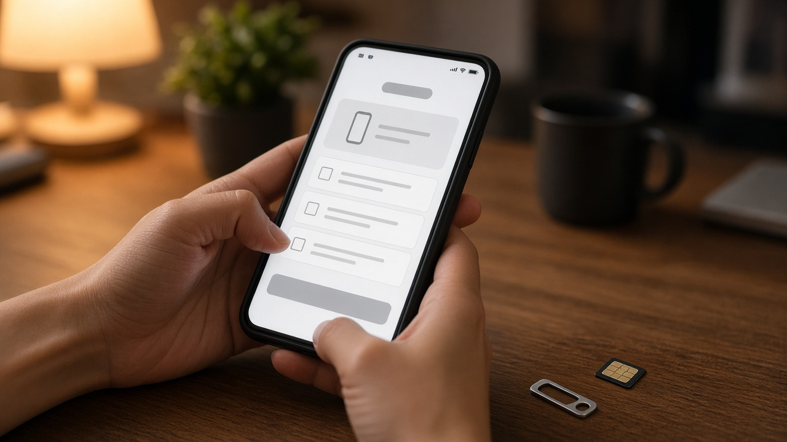
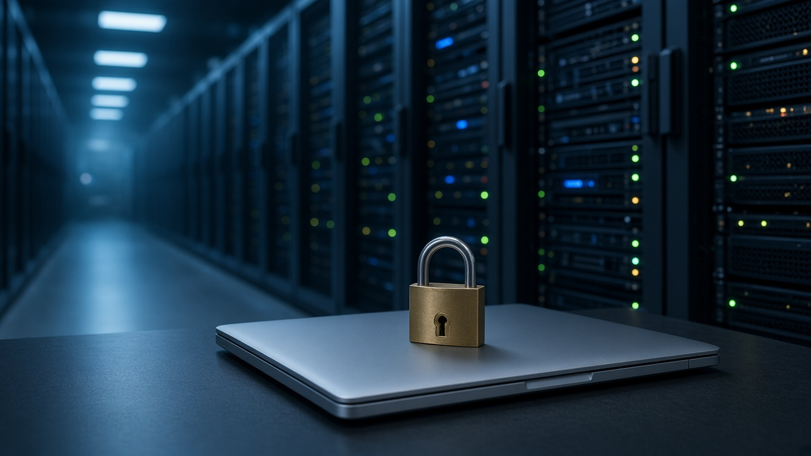
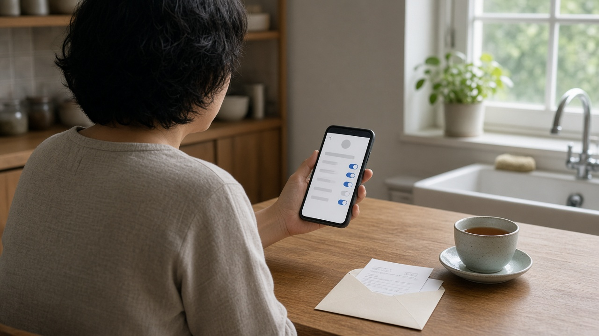

알뜰폰 8개사 개인정보 제재, 주민번호 평문 보관과 선택 동의 강요까지 내 가입 정보는 괜찮을까요

통신비를 아끼려고 알뜰폰으로 옮기신 분들이 정말 많죠.
가입할 때 주민등록번호와 신용카드번호, 계좌번호까지 다 넣었는데 이 정보가 제대로 관리되고 있는지는 사실 잘 모르고 지나가게 돼요.
개인정보보호위원회가 11월 11일 전체회의에서 알뜰폰 사업자 8곳의 개인정보 보호법 위반을 확인하고 과징금과 과태료를 매겼다고 12일 발표했어요.
어떤 회사가 무엇을 잘못했는지, 이용자 입장에서는 무엇을 확인해 두면 좋은지 차례로 정리해 볼게요.
알뜰폰 8개사가 받은 처분, 한눈에 보면
이번에 제재를 받은 곳은 케이티엠모바일, 미디어로그의 유플러스 유모바일, 에스원의 안심모바일, 엘지헬로비전의 헬로모바일, 에스케이텔링크의 세븐모바일, 유니컴즈의 모빙, 국민은행의 리브모바일, 케이티스카이라이프의 스카이라이프 모바일이에요.
과징금은 모두 6천90만 원, 과태료는 1억 1천40만 원으로 합치면 1억 7천130만 원이에요.
과징금은 법적 근거 없이 주민등록번호를 처리한 두 곳에 매겨졌는데, 미디어로그가 4천720만 원, 케이티엠모바일이 1천370만 원이에요.
과태료는 케이티엠모바일 2천340만 원, 엘지헬로비전 1천530만 원, 미디어로그와 에스케이텔링크 각 1천440만 원, 국민은행 1천380만 원, 유니컴즈 1천290만 원, 에스원 1천80만 원, 케이티스카이라이프 540만 원이에요.
여기에 재발을 막기 위한 시정명령과, 처분 사실을 알리라는 공표명령도 함께 내려졌어요.
알뜰폰 회선은 약 1천50만 개로 전체 휴대폰 회선의 18퍼센트 정도라서, 생각보다 많은 분이 해당될 수 있는 이야기예요.

주민등록번호를 근거 없이 받고 암호화도 하지 않았어요
가장 무거운 문제는 주민등록번호였어요.
케이티엠모바일과 유니컴즈는 홈페이지에서 유심을 팔면서 법적 근거 없이 주민등록번호를 받았고, 미디어로그는 온라인 개통 때 요금 내는 사람을 명의자가 아닌 다른 사람으로 바꾸는 신청을 처리하면서 주민등록번호를 받았어요.
유니컴즈는 계산해 보니 과징금 면제 대상에 해당해서 같은 위반에 대해 과태료 390만 원이 대신 매겨졌어요.
보관 방식도 허술했어요.
에스케이텔링크, 엘지헬로비전, 케이티엠모바일, 미디어로그 네 곳은 주민등록번호와 신용카드번호, 계좌번호 같은 정보를 암호화하지 않은 그대로 저장해 두고 있었어요.
케이티스카이라이프와 유니컴즈는 직원에게 시스템 접근 권한을 준 기록을 법이 정한 최소 3년 동안 보관하지 않았고, 엘지헬로비전은 직원 접속 기록 관리가 소홀했어요.
이런 기록은 사고가 났을 때 누가 언제 정보를 봤는지 따지는 근거라서, 남아 있지 않으면 원인을 찾기가 어려워져요.
선택 동의를 필수로 묶고, 지워야 할 정보도 남겨 뒀어요
이용자가 직접 체감할 만한 부분은 동의 화면이에요.
신청한 사람에게만 주는 부가서비스 때문에 다른 회사에 정보를 넘기는 동의는 원래 선택 항목이어야 하는데, 대부분의 사업자가 이걸 필수 항목으로 넣어 두었어요.
그래서 그 동의를 하지 않으면 알뜰폰 개통이나 이용 자체가 안 되도록 운영됐다고 해요.
또 대부분의 사업자가 보관 기간이 지났거나 쓸 목적이 끝난 개인정보를 지우지 않고 갖고 있었어요.
개통이 끝나지 않은 취소, 불가, 보류 신청서도 회사마다 짧게는 5일에서 길게는 1년까지 보관 기간이 제각각이라, 개인정보위는 필요한 최소한으로 내부 기준을 정하라고 했어요.
이동통신사나 판매점처럼 개인정보 처리를 맡긴 곳에 대한 관리와 감독이 부족했다는 점도 지적됐고요.

가입은 앱으로, 해지는 매장으로 하던 절차도 고치라고 했어요
가입은 웹이나 앱으로 쉽게 되는데 해지는 대리점에 가거나 상담원과 통화해야만 되도록 해 둔 사업자도 있었어요.
개인정보위는 이렇게 가입보다 해지가 어려운 절차를 고치라고 권고했어요.
알뜰폰은 갈아타는 일이 잦은 만큼, 해지 절차가 번거로우면 이미 안 쓰는 회사에 내 정보가 오래 남는 결과로 이어지기 쉬워요.
개인정보위도 알뜰폰 가입 과정에서 고유식별정보와 결제정보처럼 중요한 정보가 오가고, 이 정보가 새면 명의도용 같은 2차 피해로 이어질 수 있다고 강조했어요.
지금 알뜰폰을 쓰고 있다면 확인해 볼 것들
이번 처분은 회사의 관리 의무를 따진 것이고, 실제로 정보가 밖으로 빠져나갔다는 발표는 아니에요.
그래도 내 정보를 직접 챙겨 두면 마음이 편해요.
먼저 쓰고 있는 알뜰폰 앱이나 홈페이지의 개인정보 동의 내역에서 다른 회사에 정보를 넘기는 동의가 있는지 보고, 쓰지 않는 부가서비스라면 동의를 거두거나 서비스를 해지해 보세요.
예전에 쓰다 옮긴 알뜰폰 회사가 있다면 해지가 제대로 끝났는지, 남은 결제 수단 등록이 없는지도 함께 확인해 두면 좋아요.
새로 가입할 때는 필수와 선택 항목이 제대로 나뉘어 있는지 살펴보고, 선택 항목을 거부했는데 개통이 막힌다면 그 화면을 남겨 두세요.
내 정보가 부당하게 처리됐다고 생각되면 개인정보침해신고센터 국번 없이 118로 신고하거나 상담할 수 있고, 피해 보상 문제는 개인정보분쟁조정위원회 1833 6972로 조정을 신청할 수 있어요.
참고 자료 개인정보보호위원회 2026년 11월 12일 보도자료 8개 알뜰폰 사업자의 개인정보 처리에 대한 조사 결과 발표, 연합뉴스 2026년 11월 12일 알뜰폰 업체들 주민번호 무단수집에 암호화 소홀 8개사 제재, 아이뉴스24 2026년 11월 12일 알뜰폰 8개사 개인정보 관리 구멍 과징금 과태료 1억7130만원
태그 알뜰폰개인정보 알뜰폰과징금 개인정보보호위원회 주민등록번호수집 개인정보암호화 알뜰폰해지 선택동의 명의도용예방 개인정보침해신고 알뜰폰가입